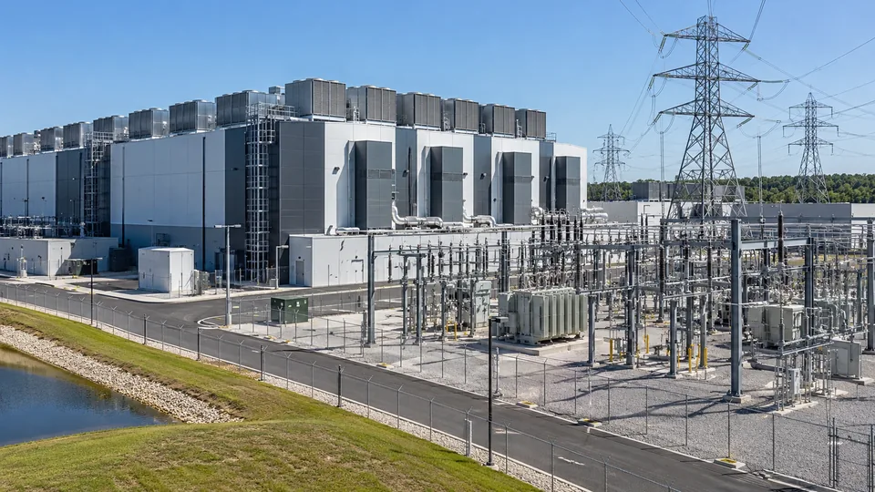

Data Centers Face a Power Constraint as Well as a Chip Constraint
Forecast electricity demand is rising, but grid connections, tariffs and project timing determine the economics of each facility.

A data center can have customers, financing and server orders while still lacking a firm date for usable electricity. The connection between digital demand and physical supply has become central to AI investment. Capacity in a presentation is not the same as an operating facility with power available under a workable tariff.
The IEA's 2026 report, Key Questions on Energy and AI, projects global data-center electricity consumption rising from 485 terawatt-hours in 2025 to about 950 TWh in 2030. This is a projection for all data centers, not a measurement of electricity used solely by AI, and its delivery depends on constraints across the supply chain. Nvidia’s European power and cooling announcement illustrates the separate roles of efficiency and grid-responsive computing.
Distinguish power capacity from energy consumption
Megawatts describe power at a point in time. Megawatt-hours describe energy used over a period. A 100 MW connection does not mean a facility consumes 100 MWh in a year, and a planned connection does not prove that its full capacity is continuously occupied by operating servers.
For a hypothetical facility drawing 100 MW around the clock for 365 days, annual consumption is 876,000 MWh, or 0.876 TWh. At a 60 MW average draw, annual consumption is 525,600 MWh. The same nominal connection can support different annual consumption depending on how the facility is filled and operated.
A forecast should therefore identify whether it describes grid connection capacity, IT equipment capacity or average facility load. Combining those numbers without adjustment can overstate or understate demand. The difference becomes particularly important when many projects are announced before their operating schedules are established.
Cooling and electrical systems add to IT load
Power usage effectiveness, or PUE, compares total facility energy with energy used by IT equipment. Under a simplified constant-ratio assumption, PUE of 1.20 means 1.20 units of facility energy for each unit used by IT. It does not mean the whole facility operates at 20% efficiency.
Suppose a hypothetical site has 100 MW of IT capacity used at an average 60%. Average IT demand is 60 MW. At PUE 1.20, average facility demand becomes 72 MW, producing 630,720 MWh annually. With an illustrative energy price of $50 per MWh, the energy-only bill is about $31.5 million a year.
If PUE improves to 1.10 under otherwise identical assumptions, facility demand falls to 66 MW and annual consumption to 578,160 MWh. The difference is 52,560 MWh, worth about $2.63 million at that assumed energy price. Actual cooling requirements and performance vary with location, equipment and load.
The energy price is not the complete power cost
Tariffs can include demand charges, network costs and other components alongside energy. Developers can also face connection and infrastructure spending. A wholesale spot quotation is therefore not automatically the rate a facility pays for reliable service at its location.
For example, a hypothetical demand charge of $10 per kilowatt-month applied to a 100,000 kW billing demand would cost $1 million monthly, or $12 million annually. This is a separate illustrative charge, not a current tariff. Its existence shows why multiplying MWh by one quoted energy price can miss a material part of the bill.
A long-term power purchase agreement can change price exposure and support new generation. It does not by itself establish that sufficient power is physically deliverable at the facility in every hour. The electrical connection, supply arrangement and contractual treatment of interruptions remain separate questions.
Timing can dominate the economics
The IEA identifies grid connections, energy equipment and other physical bottlenecks as constraints on expansion. An energized building also needs installed equipment and customer workloads before it earns the revenue implied by its full design capacity. Investment and cash generation can occur in different periods.
Suppose a hypothetical project ties up $500 million for an additional year before operation. An assumed 8% annual funding charge represents $40 million for that year before other carrying costs. This does not mean every delay causes exactly that loss: staged payments, financing terms and alternative uses of funds determine the actual effect.
Read the timing alongside capital spending and returns. A power delay can affect the productive life of equipment, customer commitments and financing needs. Conversely, buying equipment too late can leave completed electrical capacity unused.
Efficiency improvements coexist with growing demand
Using less energy per task can lower unit cost while expanding the number and complexity of tasks performed. Training, simple text responses and extended agent workflows have different demand profiles. A single estimate of energy per query cannot represent every AI workload or future usage pattern.
The same system constraints discussed in AI computing capacity matter here: servers, memory, cooling and power must work together. Assess the project pipeline through actual connection milestones, utilization assumptions and tariff terms. Global demand growth provides context; local delivery and operating conditions determine each facility's economics.
Sources and methodology (3)
Primary references for the definitions, methods and risks discussed above. Examples labeled hypothetical or illustrative are not current market quotations.
TTN analysis for informational purposes. This article is not investment, tax or legal advice.